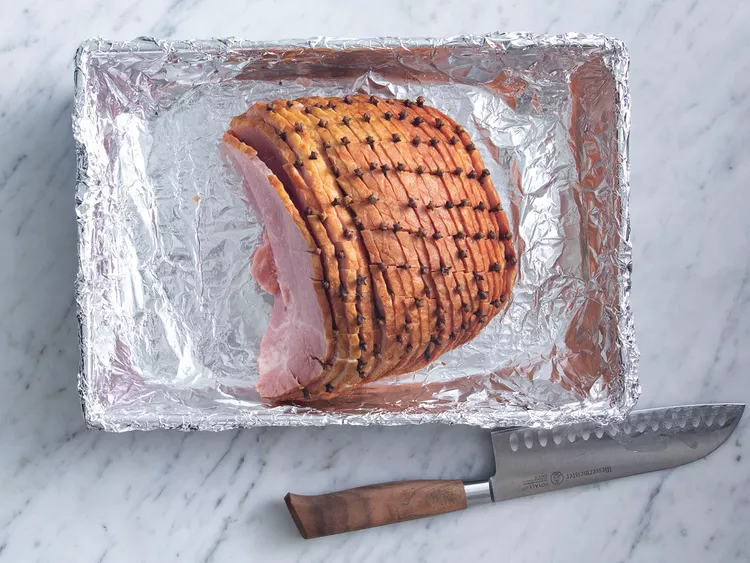
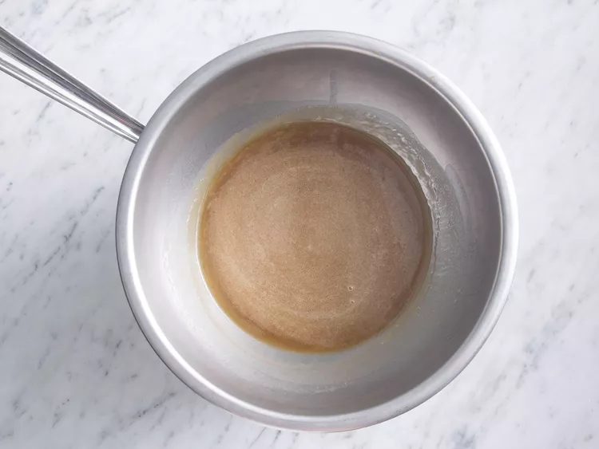
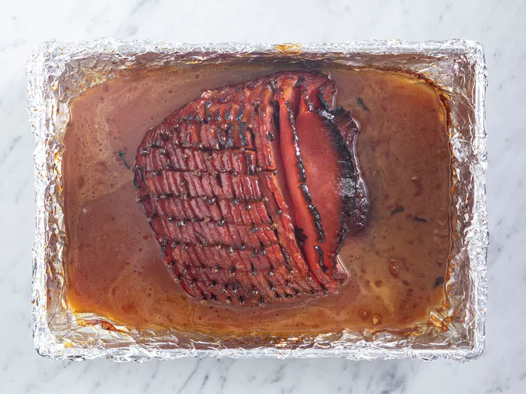

This ham tastes very much like the famous honey baked ham but costs much less, and there's no need to fight the crowds at holiday time. You can even buy the ham presliced to make it easier and more like the original. It is very good. I make this while preparing the rest of the meal in the kitchen so that I don't forget to baste!
You'll need just five ingredients for this top-rated honey-glazed ham recipe:
This recipe calls for one 5-pound ready-to-eat ham. If your ham is larger or smaller, you'll need to adjust the recipe.
Aromatic whole cloves add warm, spicy-sweet flavor.
Of course, you'll need honey. Pro-tip: Spray your measuring cup with cooking spray so the honey slides out easily.
Dark corn syrup adds more flavor and contributes to caramelization. Some reviewers suggest substituting brown sugar or using a combination of corn syrup and brown sugar.
Butter adds and helps retain moisture, resulting in a juicy honey-baked ham that's impossible to resist.
Preheat oven to 325 degrees F (165 degrees C).
Score ham, and stud with the whole cloves. Place ham in foil lined pan.
In the top half of a double boiler, heat the corn syrup, honey and butter. Keep glaze warm while baking ham.
Brush glaze over ham, and bake for 1 hour and 15 minutes in the preheated oven.
Baste ham every 10 to 15 minutes with the honey glaze. During the last 4 to 5 minutes of baking, turn on broiler to caramelize the glaze. Remove from oven, and let sit a few minutes before serving.
521 Calories
28g Fat
42g Carbs
26g Protein